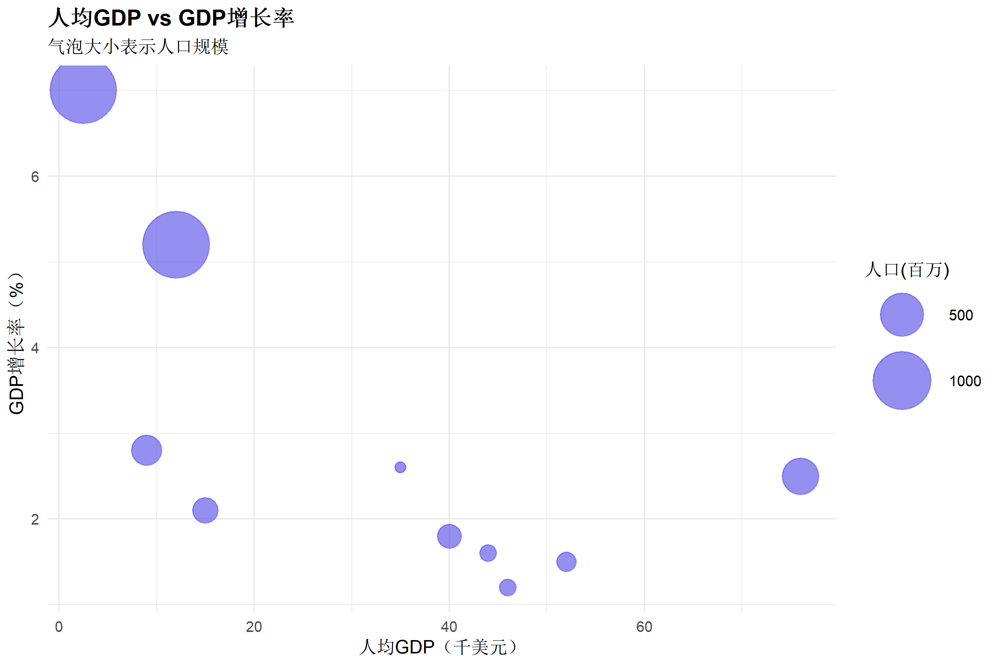
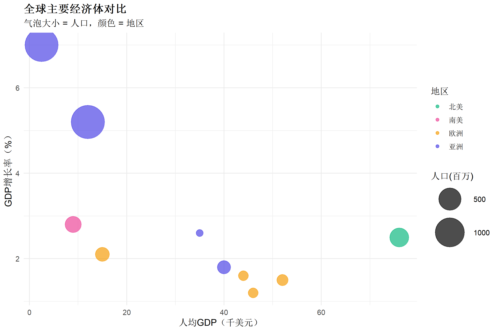
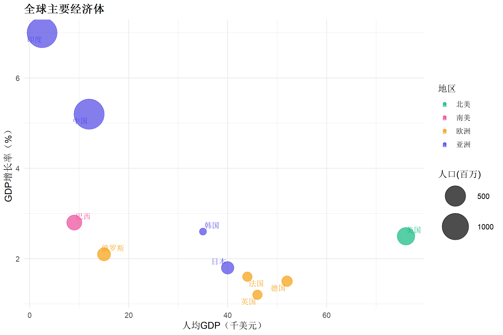
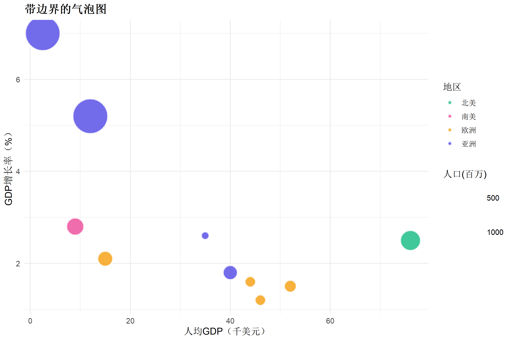
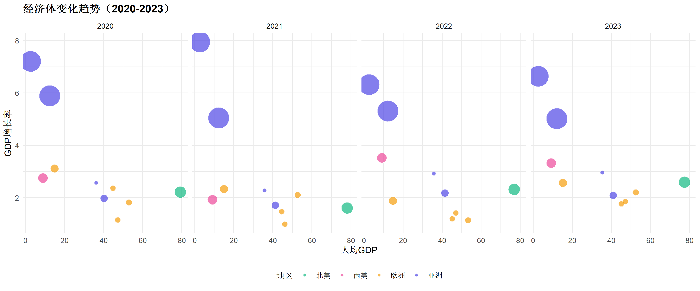
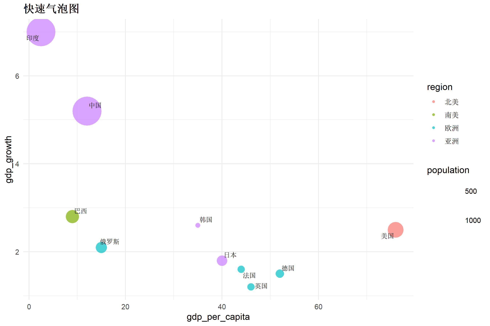

library(ggplot2)
library(dplyr)
library(scales)R语言相关图矩阵绑制
可视化教程
统计图表
关联图
什么是气泡图
气泡图（Bubble Chart）是散点图的扩展，除了用 x、y 坐标表示两个变量外，还用气泡大小表示第三个变量，有时还用颜色表示第四个变量。
适用场景
| 场景 | 说明 |
|---|---|
| 多维数据展示 | 同时展示3-4个变量 |
| 国家/城市对比 | 如著名的 Gapminder 图 |
| 市场分析 | 展示规模、增长率、市场份额 |
| 项目优先级 | 影响力 vs 可行性 vs 资源需求 |
R包加载
基础气泡图
# 创建示例数据：各国经济指标
country_data <- data.frame(
country = c(
"中国", "美国", "日本", "德国", "印度",
"英国", "法国", "巴西", "俄罗斯", "韩国"
),
gdp_growth = c(5.2, 2.5, 1.8, 1.5, 7.0, 1.2, 1.6, 2.8, 2.1, 2.6),
gdp_per_capita = c(12, 76, 40, 52, 2.5, 46, 44, 9, 15, 35),
population = c(1400, 330, 125, 84, 1380, 67, 67, 215, 144, 52),
region = c(
"亚洲", "北美", "亚洲", "欧洲", "亚洲",
"欧洲", "欧洲", "南美", "欧洲", "亚洲"
)
)
ggplot(country_data, aes(x = gdp_per_capita, y = gdp_growth, size = population)) +
geom_point(alpha = 0.6, color = "#4f46e5") +
scale_size_continuous(range = c(3, 20), name = "人口(百万)") +
labs(
title = "人均GDP vs GDP增长率",
subtitle = "气泡大小表示人口规模",
x = "人均GDP（千美元）",
y = "GDP增长率（%）"
) +
theme_minimal(base_size = 12) +
theme(plot.title = element_text(face = "bold"))
按区域着色
ggplot(country_data, aes(
x = gdp_per_capita, y = gdp_growth,
size = population, color = region
)) +
geom_point(alpha = 0.7) +
scale_size_continuous(range = c(4, 20), name = "人口(百万)") +
scale_color_manual(values = c(
"亚洲" = "#4f46e5", "北美" = "#10b981",
"欧洲" = "#f59e0b", "南美" = "#ec4899"
)) +
labs(
title = "全球主要经济体对比",
subtitle = "气泡大小 = 人口，颜色 = 地区",
x = "人均GDP（千美元）",
y = "GDP增长率（%）",
color = "地区"
) +
theme_minimal(base_size = 12) +
theme(
plot.title = element_text(face = "bold"),
legend.position = "right"
)
添加国家标签
library(ggrepel)
ggplot(country_data, aes(
x = gdp_per_capita, y = gdp_growth,
size = population, color = region
)) +
geom_point(alpha = 0.7) +
geom_text_repel(aes(label = country), size = 3.5, max.overlaps = 15) +
scale_size_continuous(range = c(4, 18), name = "人口(百万)") +
scale_color_manual(values = c(
"亚洲" = "#4f46e5", "北美" = "#10b981",
"欧洲" = "#f59e0b", "南美" = "#ec4899"
)) +
labs(
title = "全球主要经济体",
x = "人均GDP（千美元）",
y = "GDP增长率（%）",
color = "地区"
) +
theme_minimal(base_size = 12) +
theme(plot.title = element_text(face = "bold"))
带边界的气泡图
添加气泡边框使重叠区域更清晰：
ggplot(country_data, aes(
x = gdp_per_capita, y = gdp_growth,
size = population, fill = region
)) +
geom_point(shape = 21, color = "white", stroke = 1.5, alpha = 0.8) +
scale_size_continuous(range = c(4, 20), name = "人口(百万)") +
scale_fill_manual(values = c(
"亚洲" = "#4f46e5", "北美" = "#10b981",
"欧洲" = "#f59e0b", "南美" = "#ec4899"
)) +
labs(
title = "带边界的气泡图",
x = "人均GDP（千美元）",
y = "GDP增长率（%）",
fill = "地区"
) +
theme_minimal(base_size = 12) +
theme(plot.title = element_text(face = "bold"))
四象限分析气泡图
添加参考线划分四象限：
# 计算中位数作为分界线
median_x <- median(country_data$gdp_per_capita)
median_y <- median(country_data$gdp_growth)
ggplot(country_data, aes(
x = gdp_per_capita, y = gdp_growth,
size = population, fill = region
)) +
# 四象限背景
annotate("rect",
xmin = -Inf, xmax = median_x, ymin = median_y, ymax = Inf,
fill = "#dcfce7", alpha = 0.3
) +
annotate("rect",
xmin = median_x, xmax = Inf, ymin = median_y, ymax = Inf,
fill = "#dbeafe", alpha = 0.3
) +
# 参考线
geom_hline(yintercept = median_y, linetype = "dashed", color = "gray50") +
geom_vline(xintercept = median_x, linetype = "dashed", color = "gray50") +
# 气泡
geom_point(shape = 21, color = "white", stroke = 1, alpha = 0.85) +
geom_text_repel(aes(label = country), size = 3) +
scale_size_continuous(range = c(4, 18)) +
scale_fill_manual(values = c(
"亚洲" = "#4f46e5", "北美" = "#10b981",
"欧洲" = "#f59e0b", "南美" = "#ec4899"
)) +
# 象限标签
annotate("text", x = 5, y = 6.5, label = "高潜力", fontface = "bold", color = "#166534") +
annotate("text", x = 60, y = 6.5, label = "明星", fontface = "bold", color = "#1e40af") +
labs(
title = "四象限分析：经济体定位",
x = "人均GDP（千美元）",
y = "GDP增长率（%）"
) +
theme_minimal(base_size = 12) +
theme(
plot.title = element_text(face = "bold"),
legend.position = "none"
)
动态效果模拟（多年数据）
# 模拟多年数据
set.seed(42)
years <- 2020:2023
multi_year <- do.call(rbind, lapply(years, function(y) {
country_data %>%
mutate(
year = y,
gdp_growth = gdp_growth + rnorm(n(), 0, 0.5),
gdp_per_capita = gdp_per_capita * (1 + rnorm(n(), 0.02, 0.01))
)
}))
ggplot(multi_year, aes(
x = gdp_per_capita, y = gdp_growth,
size = population, fill = region
)) +
geom_point(shape = 21, alpha = 0.7, color = "white") +
facet_wrap(~year, nrow = 1) +
scale_size_continuous(range = c(2, 12), guide = "none") +
scale_fill_manual(values = c(
"亚洲" = "#4f46e5", "北美" = "#10b981",
"欧洲" = "#f59e0b", "南美" = "#ec4899"
)) +
labs(
title = "经济体变化趋势（2020-2023）",
x = "人均GDP",
y = "GDP增长率",
fill = "地区"
) +
theme_minimal(base_size = 11) +
theme(
plot.title = element_text(face = "bold"),
legend.position = "bottom"
)
实用函数封装
#' 快速绘制气泡图
plot_bubble <- function(data, x, y, size, color = NULL,
labels = NULL, title = NULL) {
p <- ggplot(data, aes(x = .data[[x]], y = .data[[y]], size = .data[[size]]))
if (!is.null(color)) {
p <- p + geom_point(aes(fill = .data[[color]]),
shape = 21, alpha = 0.7, color = "white"
)
} else {
p <- p + geom_point(alpha = 0.7, color = "#4f46e5")
}
if (!is.null(labels)) {
p <- p + ggrepel::geom_text_repel(aes(label = .data[[labels]]), size = 3)
}
p + scale_size_continuous(range = c(3, 18)) +
labs(title = title, x = x, y = y) +
theme_minimal(base_size = 12) +
theme(plot.title = element_text(face = "bold"))
}
# 使用示例
plot_bubble(country_data, "gdp_per_capita", "gdp_growth", "population",
color = "region", labels = "country", title = "快速气泡图"
)
总结
| 技巧 | 说明 |
|---|---|
| 基础气泡 | aes(size = var) 映射第三变量 |
| 颜色编码 | aes(color/fill = var) 映射第四变量 |
| 带边框 | shape = 21 + fill + color = "white" |
| 标签 | ggrepel::geom_text_repel() 避免重叠 |
| 四象限 | 添加参考线和背景区域 |
相关教程
{r setup, include=FALSE} knitr::opts_chunk$set( echo = TRUE, warning = FALSE, message = FALSE, fig.width = 9, fig.height = 6, fig.retina = 2, out.width = "100%", dpi = 150 )
什么是抖动图和蜂群图
抖动图（Jitter Plot）和蜂群图（Beeswarm Plot）是展示离散分类变量与连续变量关系的可视化方式，通过随机或规则偏移避免数据点重叠。
适用场景
| 场景 | 说明 |
|---|---|
| 小样本展示 | 每组10-100个数据点 |
| 查看原始数据 | 搭配箱线图使用 |
| 组间比较 | 各组数据分布差异 |
| 发现模式 | 识别聚类、离群值 |
R包加载
library(ggplot2)
library(dplyr)可选蜂群图包：
{r eval=FALSE} # install.packages("ggbeeswarm") library(ggbeeswarm)
基础抖动图
# 使用内置数据
data(iris)
ggplot(iris, aes(x = Species, y = Sepal.Length)) +
geom_jitter(width = 0.2, height = 0, alpha = 0.6, color = "#4f46e5") +
labs(
title = "鸢尾花萼片长度分布",
subtitle = "抖动图展示各物种分布",
x = "物种",
y = "萼片长度 (cm)"
) +
theme_minimal(base_size = 12) +
theme(plot.title = element_text(face = "bold"))参数解析
| 参数 | 说明 |
|---|---|
width |
水平抖动幅度（0-0.5） |
height |
垂直抖动幅度（通常设为0） |
alpha |
透明度（处理重叠） |
抖动图 + 箱线图
ggplot(iris, aes(x = Species, y = Sepal.Length, color = Species)) +
geom_boxplot(outlier.shape = NA, alpha = 0.3, width = 0.5) +
geom_jitter(width = 0.15, alpha = 0.7, size = 2) +
scale_color_manual(values = c("#4f46e5", "#10b981", "#f59e0b")) +
labs(
title = "箱线图 + 抖动图组合",
x = "物种",
y = "萼片长度 (cm)"
) +
theme_minimal(base_size = 12) +
theme(
plot.title = element_text(face = "bold"),
legend.position = "none"
)蜂群图 (Beeswarm)
蜂群图使用算法避免重叠，比随机抖动更整齐：
library(ggbeeswarm)
ggplot(iris, aes(x = Species, y = Sepal.Length, color = Species)) +
geom_beeswarm(cex = 2.5, size = 2.5) +
scale_color_manual(values = c("#4f46e5", "#10b981", "#f59e0b")) +
labs(
title = "蜂群图 (Beeswarm Plot)",
subtitle = "有序排列避免重叠",
x = "物种",
y = "萼片长度 (cm)"
) +
theme_minimal(base_size = 12) +
theme(
plot.title = element_text(face = "bold"),
legend.position = "none"
)Quasirandom 图
ggplot(iris, aes(x = Species, y = Sepal.Length, color = Species)) +
geom_quasirandom(size = 2.5, bandwidth = 0.4) +
scale_color_manual(values = c("#4f46e5", "#10b981", "#f59e0b")) +
labs(
title = "Quasirandom 分布图",
x = "物种",
y = "萼片长度 (cm)"
) +
theme_minimal(base_size = 12) +
theme(
plot.title = element_text(face = "bold"),
legend.position = "none"
)带均值标记的抖动图
# 计算均值
means <- iris %>%
group_by(Species) %>%
summarise(mean_val = mean(Sepal.Length))
ggplot(iris, aes(x = Species, y = Sepal.Length, color = Species)) +
geom_jitter(width = 0.2, alpha = 0.5, size = 2) +
# 添加均值点
geom_point(
data = means, aes(y = mean_val),
size = 5, shape = 18, color = "#1f2937"
) +
# 添加均值横线
geom_errorbar(
data = means, aes(y = mean_val, ymin = mean_val, ymax = mean_val),
width = 0.4, linewidth = 1, color = "#1f2937"
) +
scale_color_manual(values = c("#4f46e5", "#10b981", "#f59e0b")) +
labs(
title = "抖动图 + 均值标记",
x = "物种",
y = "萼片长度 (cm)"
) +
theme_minimal(base_size = 12) +
theme(
plot.title = element_text(face = "bold"),
legend.position = "none"
)分组抖动图
# 模拟分组数据
set.seed(42)
group_data <- data.frame(
treatment = rep(c("对照组", "处理组"), each = 60),
timepoint = rep(rep(c("基线", "4周", "8周"), each = 20), 2),
value = c(
rnorm(20, 50, 8), rnorm(20, 52, 8), rnorm(20, 55, 8),
rnorm(20, 50, 8), rnorm(20, 62, 8), rnorm(20, 70, 8)
)
)
ggplot(group_data, aes(x = timepoint, y = value, color = treatment)) +
geom_jitter(
position = position_jitterdodge(jitter.width = 0.15, dodge.width = 0.7),
alpha = 0.6, size = 2
) +
stat_summary(
fun = mean, geom = "point", shape = 18, size = 4,
position = position_dodge(width = 0.7)
) +
scale_color_manual(values = c("对照组" = "#94a3b8", "处理组" = "#4f46e5")) +
labs(
title = "分组抖动图",
subtitle = "对照组 vs 处理组",
x = "时间点",
y = "指标值",
color = NULL
) +
theme_minimal(base_size = 12) +
theme(
plot.title = element_text(face = "bold"),
legend.position = "top"
)总结
| 图表类型 | 核心函数 | 特点 |
|---|---|---|
| 抖动图 | geom_jitter() |
随机偏移，简单快捷 |
| 蜂群图 | geom_beeswarm() |
有序排列，更整齐 |
| Quasirandom | geom_quasirandom() |
介于两者之间 |
设计建议
- 数据量 < 50 时用蜂群图
- 数据量 > 100 时增加透明度
- 搭配箱线图/小提琴图使用
相关教程
{r setup, include=FALSE} knitr::opts_chunk$set( echo = TRUE, warning = FALSE, message = FALSE, fig.width = 9, fig.height = 7, fig.retina = 2, out.width = "100%", dpi = 150 )
什么是边缘分布图
边缘分布图（Marginal Distribution Plot）在散点图的边缘添加直方图、密度图或箱线图，同时展示两个变量的联合分布和各自的边缘分布。
适用场景
| 场景 | 说明 |
|---|---|
| 探索性分析 | 快速了解变量分布和相关性 |
| 双变量分析 | 同时查看边缘和联合分布 |
| 相关性展示 | 增强散点图信息量 |
R包加载
library(ggplot2)
library(dplyr)
# 边缘图专用包
# install.packages("ggExtra")
library(ggExtra)基础边缘直方图
# 基础散点图
p <- ggplot(iris, aes(x = Sepal.Length, y = Sepal.Width, color = Species)) +
geom_point(size = 2.5, alpha = 0.7) +
scale_color_manual(values = c("#4f46e5", "#10b981", "#f59e0b")) +
labs(
title = "鸢尾花萼片尺寸分布",
x = "萼片长度 (cm)",
y = "萼片宽度 (cm)"
) +
theme_minimal(base_size = 12) +
theme(
plot.title = element_text(face = "bold"),
legend.position = "bottom"
)
# 添加边缘直方图
ggMarginal(p, type = "histogram", fill = "#4f46e5", alpha = 0.6)边缘密度图
ggMarginal(p, type = "density", fill = "#4f46e5", alpha = 0.5)边缘箱线图
ggMarginal(p, type = "boxplot", fill = "#e0e7ff")分组边缘分布
按颜色分组显示边缘分布：
ggMarginal(p, type = "density", groupColour = TRUE, groupFill = TRUE, alpha = 0.4)混合类型边缘图
x轴用直方图，y轴用密度图：
ggMarginal(p, type = "densigram", fill = "#818cf8")自定义边缘图大小
ggMarginal(p,
type = "histogram",
fill = "#4f46e5", alpha = 0.6,
xparams = list(binwidth = 0.3),
yparams = list(binwidth = 0.2),
size = 8
) # 边缘图占主图的 1/8使用 patchwork 手动构建
如需更多自定义控制：
```{r fig.width=10, fig.height=8} library(patchwork)
主散点图
main_plot <- ggplot(iris, aes(x = Sepal.Length, y = Sepal.Width, color = Species)) + geom_point(size = 2.5, alpha = 0.7) + scale_color_manual(values = c(“#4f46e5”, “#10b981”, “#f59e0b”)) + theme_minimal() + theme(legend.position = “none”)
顶部边缘图
top_hist <- ggplot(iris, aes(x = Sepal.Length, fill = Species)) + geom_density(alpha = 0.5) + scale_fill_manual(values = c(“#4f46e5”, “#10b981”, “#f59e0b”)) + theme_void() + theme(legend.position = “none”)
右侧边缘图
right_hist <- ggplot(iris, aes(x = Sepal.Width, fill = Species)) + geom_density(alpha = 0.5) + scale_fill_manual(values = c(“#4f46e5”, “#10b981”, “#f59e0b”)) + coord_flip() + theme_void() + theme(legend.position = “none”)
组合
top_hist + plot_spacer() + main_plot + right_hist + plot_layout(ncol = 2, nrow = 2, widths = c(4, 1), heights = c(1, 4))
---
## 总结
| 边缘类型 | 参数 | 适用场景 |
|----------|------|----------|
| **直方图** | `type = "histogram"` | 离散分布 |
| **密度图** | `type = "density"` | 平滑分布 |
| **箱线图** | `type = "boxplot"` | 快速统计 |
| **小提琴图** | `type = "violin"` | 分布形状 |
| **混合图** | `type = "densigram"` | 结合两者 |
### 相关教程
- [散点图与趋势线](2026-bindscatterplot.html)
- [直方图与密度图](2027-bindhistogram.html)
---
title: "R语言Joy Plot山脊图绑制"
date: "2026-01-15"
categories: [可视化教程, 统计图表, 分布图]
image: "images/bindjoyplot_cover.svg"
---
```{r setup, include=FALSE}
knitr::opts_chunk$set(
echo = TRUE, warning = FALSE, message = FALSE,
fig.width = 9, fig.height = 7, fig.retina = 2, out.width = "100%", dpi = 150
)什么是Joy Plot/山脊图
Joy Plot（又称山脊图/Ridgeline Plot）展示多组数据的密度分布，各组分布部分重叠，形成类似山脊的视觉效果。名称来源于 Joy Division 专辑封面。
适用场景
| 场景 | 说明 |
|---|---|
| 时间序列分布 | 各月份/年份的分布变化 |
| 多组比较 | 5-20组数据分布对比 |
| 趋势展示 | 分布随时间的演变 |
R包加载
library(ggplot2)
library(dplyr)
# Joy Plot 专用包
# install.packages("ggridges")
library(ggridges)基础山脊图
# 使用内置数据
data(lincoln_weather)
ggplot(lincoln_weather, aes(x = Mean.Temperature..F., y = Month, fill = Month)) +
geom_density_ridges(alpha = 0.7) +
scale_fill_viridis_d(option = "plasma") +
labs(
title = "林肯市月均气温分布",
subtitle = "Joy Plot / 山脊图",
x = "平均温度 (°F)",
y = NULL
) +
theme_ridges() +
theme(
plot.title = element_text(face = "bold"),
legend.position = "none"
)带填充渐变的山脊图
ggplot(lincoln_weather, aes(
x = Mean.Temperature..F., y = Month,
fill = stat(x)
)) +
geom_density_ridges_gradient(scale = 3, rel_min_height = 0.01) +
scale_fill_viridis_c(option = "plasma", name = "温度") +
labs(
title = "温度分布热力山脊图",
x = "平均温度 (°F)",
y = NULL
) +
theme_ridges() +
theme(plot.title = element_text(face = "bold"))带分位数标记
ggplot(lincoln_weather, aes(x = Mean.Temperature..F., y = Month, fill = Month)) +
geom_density_ridges(
alpha = 0.7,
quantile_lines = TRUE,
quantiles = 2 # 显示中位数
) +
scale_fill_viridis_d(option = "mako") +
labs(
title = "带中位数线的山脊图",
x = "平均温度 (°F)",
y = NULL
) +
theme_ridges() +
theme(legend.position = "none")带点的山脊图
ggplot(lincoln_weather, aes(x = Mean.Temperature..F., y = Month, fill = Month)) +
geom_density_ridges(
alpha = 0.6,
jittered_points = TRUE,
point_size = 0.8,
point_alpha = 0.5,
position = position_points_jitter(height = 0)
) +
scale_fill_viridis_d(option = "turbo") +
labs(
title = "带数据点的山脊图",
x = "平均温度 (°F)",
y = NULL
) +
theme_ridges() +
theme(legend.position = "none")自定义颜色和样式
# 创建示例数据
set.seed(42)
exam_data <- data.frame(
subject = rep(c("数学", "语文", "英语", "物理", "化学"), each = 100),
score = c(
rnorm(100, 75, 12),
rnorm(100, 78, 10),
rnorm(100, 72, 15),
rnorm(100, 68, 14),
rnorm(100, 70, 13)
)
)
ggplot(exam_data, aes(x = score, y = subject, fill = subject)) +
geom_density_ridges(
alpha = 0.8,
scale = 1.2,
rel_min_height = 0.01
) +
scale_fill_manual(values = c(
"数学" = "#4f46e5", "语文" = "#10b981", "英语" = "#f59e0b",
"物理" = "#ec4899", "化学" = "#8b5cf6"
)) +
scale_x_continuous(limits = c(30, 110)) +
labs(
title = "各科成绩分布",
x = "分数",
y = NULL
) +
theme_ridges() +
theme(
plot.title = element_text(face = "bold", size = 14),
legend.position = "none"
)雨云图 (Raincloud Plot)
结合箱线图和密度图：
ggplot(exam_data, aes(x = score, y = subject, fill = subject)) +
geom_density_ridges(
alpha = 0.6,
jittered_points = TRUE,
position = position_raincloud(height = 0.15, adjust_vlines = TRUE),
point_size = 0.4,
point_alpha = 0.3
) +
scale_fill_manual(values = c(
"数学" = "#4f46e5", "语文" = "#10b981", "英语" = "#f59e0b",
"物理" = "#ec4899", "化学" = "#8b5cf6"
)) +
labs(
title = "雨云图 (Raincloud Plot)",
x = "分数",
y = NULL
) +
theme_ridges() +
theme(legend.position = "none")总结
| 图表类型 | 函数 | 特点 |
|---|---|---|
| 基础山脊图 | geom_density_ridges() |
简洁，多组分布 |
| 渐变山脊图 | geom_density_ridges_gradient() |
热力效果 |
| 带点山脊图 | jittered_points = TRUE |
显示原始数据 |
| 雨云图 | position_raincloud() |
结合分布和原始点 |
设计建议
- 组数控制在 5-15 个
- 使用
scale参数调整重叠程度 - 按中位数或均值排序
相关教程
{r setup, include=FALSE} knitr::opts_chunk$set( echo = TRUE, warning = FALSE, message = FALSE, fig.width = 12, fig.height = 4, fig.retina = 2, out.width = "100%", dpi = 150 )
什么是日历热图
日历热图（Calendar Heatmap）按日历格式排列数据，用颜色深浅表示每日数值大小，类似 GitHub 的贡献热图。
适用场景
| 场景 | 说明 |
|---|---|
| 活动追踪 | 运动、学习、提交记录 |
| 销售日报 | 每日销售额热力图 |
| 网站流量 | 每日访问量 |
| 健康记录 | 每日步数、睡眠等 |
R包加载
library(ggplot2)
library(dplyr)
library(lubridate)准备示例数据
# 生成一年的日期和随机值
set.seed(42)
calendar_data <- data.frame(
date = seq(as.Date("2023-01-01"), as.Date("2023-12-31"), by = "day")
) %>%
mutate(
value = round(runif(n(), 0, 100)),
week = week(date),
weekday = wday(date, label = TRUE, abbr = TRUE),
month = month(date, label = TRUE),
year = year(date)
)
head(calendar_data)GitHub风格日历热图
```{r fig.width=14, fig.height=3} # 计算每周在年中的位置 calendar_data <- calendar_data %>% mutate( week_of_year = as.numeric(format(date, “%W”)), day_of_week = wday(date) )
ggplot(calendar_data, aes(x = week_of_year, y = factor(day_of_week, levels = 7:1))) + geom_tile(aes(fill = value), color = “white”, linewidth = 0.3) + scale_fill_gradient(low = “#ebedf0”, high = “#4f46e5”, name = “数值”) + scale_x_continuous( breaks = c(1, 9, 18, 27, 36, 44, 52), labels = c(“1月”, “3月”, “5月”, “7月”, “9月”, “11月”, “12月”) ) + scale_y_discrete(labels = c(“日”, “六”, “五”, “四”, “三”, “二”, “一”)) + labs( title = “2023年每日数据热图”, subtitle = “GitHub风格日历热图”, x = NULL, y = NULL ) + theme_minimal(base_size = 12) + theme( plot.title = element_text(face = “bold”), panel.grid = element_blank(), legend.position = “right” )
---
## 月份分面日历
```{r fig.width=14, fig.height=6}
# 计算月内周数
calendar_data <- calendar_data %>%
group_by(month) %>%
mutate(
week_of_month = dense_rank(week_of_year)
) %>%
ungroup()
ggplot(calendar_data, aes(x = week_of_month, y = factor(day_of_week, levels = 7:1))) +
geom_tile(aes(fill = value), color = "white", linewidth = 0.5) +
facet_wrap(~month, nrow = 2, scales = "free_x") +
scale_fill_gradient(low = "#f0fdf4", high = "#10b981", name = "数值") +
scale_y_discrete(labels = c("日", "六", "五", "四", "三", "二", "一")) +
labs(
title = "2023年月度日历热图",
x = "周",
y = NULL
) +
theme_minimal(base_size = 10) +
theme(
plot.title = element_text(face = "bold", size = 14),
panel.grid = element_blank(),
strip.text = element_text(face = "bold"),
legend.position = "bottom"
)分段着色
```{r fig.width=14, fig.height=3} # 分级着色 calendar_data <- calendar_data %>% mutate( level = cut(value, breaks = c(-Inf, 25, 50, 75, Inf), labels = c(“低”, “中低”, “中高”, “高”) ) )
ggplot(calendar_data, aes(x = week_of_year, y = factor(day_of_week, levels = 7:1))) + geom_tile(aes(fill = level), color = “white”, linewidth = 0.3) + scale_fill_manual( values = c( “低” = “#ebedf0”, “中低” = “#9be9a8”, “中高” = “#40c463”, “高” = “#216e39” ), name = “等级” ) + labs( title = “分级着色日历热图”, x = NULL, y = NULL ) + theme_minimal(base_size = 12) + theme( plot.title = element_text(face = “bold”), panel.grid = element_blank() )
---
## 总结
| 样式 | 特点 |
|------|------|
| **GitHub风格** | 横向52周，纵向7天 |
| **月份分面** | 每月独立显示 |
| **分段着色** | 离散颜色等级 |
### 相关教程
- [热图绑制完全指南](2020-heatmap.html)
- [折线图与时间序列](2029-bindlineplot.html)
---
title: "R语言环形图与甜甜圈图绑制"
date: "2026-01-15"
categories: [可视化教程, 统计图表, 组成图]
image: "images/binddonut_cover.svg"
---
```{r setup, include=FALSE}
knitr::opts_chunk$set(echo = TRUE, warning = FALSE, message = FALSE, fig.width = 8, fig.height = 6, fig.retina = 2, out.width = "100%", dpi = 150)什么是环形图
环形图（Donut Chart）是饼图的变体，中心挖空，可在中间添加统计信息或图标，视觉更现代。
R包加载
library(ggplot2)
library(dplyr)基础环形图
# 示例数据
data <- data.frame(
category = c("产品A", "产品B", "产品C", "产品D"),
value = c(35, 28, 22, 15)
)
# 计算位置
data <- data %>%
arrange(desc(value)) %>%
mutate(
fraction = value / sum(value),
ymax = cumsum(fraction),
ymin = lag(ymax, default = 0),
label_pos = (ymax + ymin) / 2,
label = paste0(value, "%")
)
ggplot(data, aes(ymax = ymax, ymin = ymin, xmax = 4, xmin = 2.5, fill = category)) +
geom_rect() +
geom_text(aes(x = 3.25, y = label_pos, label = label), color = "white", fontface = "bold") +
coord_polar(theta = "y") +
xlim(c(1, 4)) +
scale_fill_manual(values = c("#4f46e5", "#10b981", "#f59e0b", "#94a3b8")) +
labs(title = "市场份额分布", fill = NULL) +
theme_void() +
theme(plot.title = element_text(face = "bold", hjust = 0.5))中心添加统计信息
ggplot(data, aes(ymax = ymax, ymin = ymin, xmax = 4, xmin = 2, fill = category)) +
geom_rect() +
coord_polar(theta = "y") +
xlim(c(0.5, 4)) +
# 中心文字
annotate("text", x = 0.5, y = 0, label = "100%", size = 8, fontface = "bold", color = "#1f2937") +
annotate("text", x = 0.5, y = 0.15, label = "总计", size = 4, color = "#6b7280") +
scale_fill_manual(values = c("#4f46e5", "#10b981", "#f59e0b", "#94a3b8")) +
labs(title = "带中心标注的环形图", fill = NULL) +
theme_void() +
theme(
plot.title = element_text(face = "bold", hjust = 0.5),
legend.position = "bottom"
)多层环形图
# 两期数据对比
inner_data <- data.frame(
category = c("A", "B", "C", "D"),
value = c(30, 25, 25, 20)
) %>%
mutate(
fraction = value / sum(value),
ymax = cumsum(fraction),
ymin = lag(ymax, default = 0)
)
outer_data <- data.frame(
category = c("A", "B", "C", "D"),
value = c(35, 20, 28, 17)
) %>%
mutate(
fraction = value / sum(value),
ymax = cumsum(fraction),
ymin = lag(ymax, default = 0)
)
ggplot() +
# 内环（2022年）
geom_rect(data = inner_data, aes(ymax = ymax, ymin = ymin, xmax = 2.5, xmin = 1.5, fill = category), alpha = 0.6) +
# 外环（2023年）
geom_rect(data = outer_data, aes(ymax = ymax, ymin = ymin, xmax = 4, xmin = 3, fill = category)) +
coord_polar(theta = "y") +
xlim(c(0.5, 4)) +
scale_fill_manual(values = c("#4f46e5", "#10b981", "#f59e0b", "#94a3b8")) +
annotate("text", x = 2, y = 0, label = "2022", size = 3, color = "#6b7280") +
annotate("text", x = 3.5, y = 0, label = "2023", size = 3, color = "#1f2937") +
labs(title = "多层环形图：年度对比", fill = NULL) +
theme_void() +
theme(plot.title = element_text(face = "bold", hjust = 0.5))总结
| 样式 | 特点 |
|---|---|
| 基础环形图 | 饼图挖空版 |
| 带中心标注 | 显示总计或关键指标 |
| 多层环形图 | 对比多期数据 |
相关教程
{r setup, include=FALSE} knitr::opts_chunk$set(echo = TRUE, warning = FALSE, message = FALSE, fig.width = 10, fig.height = 6, fig.retina = 2, out.width = "100%", dpi = 150)
什么是瀑布图
瀑布图（Waterfall Chart）展示数值的累积增减过程，用悬浮柱状图表示各项变化对总体的贡献，常用于财务分析。
适用场景
| 场景 | 说明 |
|---|---|
| 财务分析 | 收入→成本→利润分解 |
| 销售归因 | 各渠道贡献 |
| 预算差异 | 实际vs预算差异分解 |
R包加载
library(ggplot2)
library(dplyr)
# 瀑布图包
# install.packages("waterfalls")
library(waterfalls)基础瀑布图
# 财务数据
finance_data <- data.frame(
category = c("期初余额", "产品销售", "服务收入", "运营成本", "人力成本", "税费", "期末余额"),
value = c(1000, 500, 200, -300, -250, -50, NA)
)
# 计算期末余额
finance_data$value[7] <- sum(finance_data$value, na.rm = TRUE)
# 使用waterfalls包
waterfall(finance_data,
calc_total = TRUE,
total_rect_color = "#4f46e5",
total_rect_text_color = "white",
fill_by_sign = TRUE,
fill_colours = c("正" = "#10b981", "负" = "#ef4444")
)手动构建瀑布图
# 计算累积位置
waterfall_data <- finance_data %>%
mutate(
is_total = category == "期末余额",
type = case_when(
is_total ~ "总计",
value >= 0 ~ "增加",
TRUE ~ "减少"
),
end = cumsum(ifelse(is.na(value), 0, value)),
end = ifelse(is_total, value, end),
start = lag(end, default = 0),
start = ifelse(is_total, 0, start),
id = row_number()
)
ggplot(waterfall_data, aes(x = reorder(category, id))) +
geom_rect(aes(
xmin = id - 0.4, xmax = id + 0.4,
ymin = start, ymax = end,
fill = type
)) +
# 连接线
geom_segment(
data = waterfall_data %>% filter(!is_total),
aes(x = id + 0.4, xend = id + 1 - 0.4, y = end, yend = end),
linetype = "dashed", color = "gray50"
) +
# 数值标签
geom_text(aes(
x = id, y = (start + end) / 2,
label = ifelse(value >= 0, paste0("+", value), value)
), color = "white", fontface = "bold", size = 3.5) +
scale_fill_manual(values = c("增加" = "#10b981", "减少" = "#ef4444", "总计" = "#4f46e5")) +
scale_x_discrete(labels = waterfall_data$category) +
labs(
title = "财务变动瀑布图",
x = NULL, y = "金额（万元）", fill = NULL
) +
theme_minimal(base_size = 12) +
theme(
plot.title = element_text(face = "bold"),
legend.position = "top"
)总结
| 技巧 | 说明 |
|---|---|
| 颜色编码 | 绿色增加，红色减少，蓝色总计 |
| 连接线 | 虚线连接相邻柱子 |
| 累积计算 | 使用 cumsum() 计算位置 |
相关教程
{r setup, include=FALSE} knitr::opts_chunk$set(echo = TRUE, warning = FALSE, message = FALSE, fig.width = 10, fig.height = 5, fig.retina = 2, out.width = "100%", dpi = 150)
什么是子弹图
子弹图（Bullet Chart）由Stephen Few设计，用于替代仪表盘，紧凑展示实际值与目标值的比较，同时显示背景区间。
适用场景
| 场景 | 说明 |
|---|---|
| KPI仪表盘 | 销售目标完成率 |
| 绩效对比 | 实际 vs 目标 |
| 多指标对比 | 多个KPI并排展示 |
R包加载
library(ggplot2)
library(dplyr)基础子弹图
# 示例数据
kpi_data <- data.frame(
metric = c("销售额", "毛利率", "客户满意度", "新客户数"),
actual = c(275, 68, 85, 45),
target = c(300, 70, 80, 50),
max_value = c(350, 100, 100, 60)
)
# 添加区间
kpi_data <- kpi_data %>%
mutate(
poor = max_value * 0.5,
satisfactory = max_value * 0.75,
good = max_value
)
ggplot(kpi_data, aes(y = metric)) +
# 背景区间
geom_col(aes(x = good), fill = "#e5e7eb", width = 0.6) +
geom_col(aes(x = satisfactory), fill = "#d1d5db", width = 0.6) +
geom_col(aes(x = poor), fill = "#9ca3af", width = 0.6) +
# 实际值
geom_col(aes(x = actual), fill = "#4f46e5", width = 0.25) +
# 目标线
geom_point(aes(x = target), shape = "|", size = 8, color = "#1f2937") +
labs(
title = "KPI子弹图",
subtitle = "蓝色=实际值，黑线=目标",
x = NULL, y = NULL
) +
theme_minimal(base_size = 12) +
theme(
plot.title = element_text(face = "bold"),
panel.grid.major.y = element_blank()
)带百分比标签
kpi_data <- kpi_data %>%
mutate(pct = round(actual / target * 100))
ggplot(kpi_data, aes(y = metric)) +
geom_col(aes(x = good), fill = "#f1f5f9", width = 0.6) +
geom_col(aes(x = satisfactory), fill = "#e2e8f0", width = 0.6) +
geom_col(aes(x = poor), fill = "#cbd5e1", width = 0.6) +
geom_col(aes(x = actual, fill = actual >= target), width = 0.25) +
geom_point(aes(x = target), shape = "|", size = 8, color = "#1f2937") +
geom_text(aes(x = actual + 10, label = paste0(pct, "%")), fontface = "bold", size = 3.5) +
scale_fill_manual(values = c("TRUE" = "#10b981", "FALSE" = "#f59e0b")) +
labs(
title = "KPI完成率",
x = NULL, y = NULL
) +
theme_minimal() +
theme(
plot.title = element_text(face = "bold"),
panel.grid.major.y = element_blank(),
legend.position = "none"
)总结
| 元素 | 说明 |
|---|---|
| 背景区间 | 差/中/好三档 |
| 实际值 | 窄条形柱 |
| 目标线 | 竖线标记 |
相关教程
{r setup, include=FALSE} knitr::opts_chunk$set(echo = TRUE, warning = FALSE, message = FALSE, fig.width = 10, fig.height = 5, fig.retina = 2, out.width = "100%", dpi = 150)
什么是峰谷标记图
峰谷标记图在时间序列上自动检测并标注局部最大值（峰）和最小值（谷），帮助识别关键转折点。
适用场景
| 场景 | 说明 |
|---|---|
| 股票分析 | 买卖时机识别 |
| 业务周期 | 季节性高低点 |
| 趋势分析 | 关键转折点标记 |
R包加载
library(ggplot2)
library(dplyr)峰谷检测函数
# 定义峰谷检测函数
find_peaks <- function(x, threshold = 1) {
n <- length(x)
peaks <- rep(FALSE, n)
for (i in (threshold + 1):(n - threshold)) {
if (all(x[i] > x[(i - threshold):(i - 1)]) &&
all(x[i] > x[(i + 1):(i + threshold)])) {
peaks[i] <- TRUE
}
}
peaks
}
find_valleys <- function(x, threshold = 1) {
n <- length(x)
valleys <- rep(FALSE, n)
for (i in (threshold + 1):(n - threshold)) {
if (all(x[i] < x[(i - threshold):(i - 1)]) &&
all(x[i] < x[(i + 1):(i + threshold)])) {
valleys[i] <- TRUE
}
}
valleys
}基础峰谷标记
# 创建时序数据
set.seed(42)
ts_data <- data.frame(
date = seq(as.Date("2023-01-01"), by = "week", length.out = 52),
value = 100 + cumsum(rnorm(52, 0, 5)) + sin(1:52 / 4) * 15
)
# 检测峰谷
ts_data <- ts_data %>%
mutate(
is_peak = find_peaks(value, threshold = 2),
is_valley = find_valleys(value, threshold = 2)
)
ggplot(ts_data, aes(x = date, y = value)) +
geom_line(color = "#4f46e5", linewidth = 1) +
# 标记峰
geom_point(
data = filter(ts_data, is_peak),
color = "#10b981", size = 4, shape = 17
) +
# 标记谷
geom_point(
data = filter(ts_data, is_valley),
color = "#ef4444", size = 4, shape = 25, fill = "#ef4444"
) +
labs(
title = "时序峰谷标记图",
subtitle = "▲ 峰值 ▼ 谷值",
x = NULL, y = "数值"
) +
theme_minimal(base_size = 12) +
theme(plot.title = element_text(face = "bold"))带标签的峰谷
library(ggrepel)
ggplot(ts_data, aes(x = date, y = value)) +
geom_line(color = "#4f46e5", linewidth = 1) +
geom_point(
data = filter(ts_data, is_peak),
color = "#10b981", size = 3
) +
geom_point(
data = filter(ts_data, is_valley),
color = "#ef4444", size = 3
) +
geom_text_repel(
data = filter(ts_data, is_peak | is_valley),
aes(label = round(value, 1), color = is_peak),
size = 3, fontface = "bold"
) +
scale_color_manual(values = c("TRUE" = "#10b981", "FALSE" = "#ef4444")) +
labs(
title = "带数值标签的峰谷图",
x = NULL, y = "数值"
) +
theme_minimal() +
theme(
plot.title = element_text(face = "bold"),
legend.position = "none"
)总结
| 技巧 | 说明 |
|---|---|
| 峰检测 | 比相邻点都高 |
| 谷检测 | 比相邻点都低 |
| threshold | 控制检测灵敏度 |
相关教程
{r setup, include=FALSE} knitr::opts_chunk$set(echo = TRUE, warning = FALSE, message = FALSE, fig.width = 8, fig.height = 8, fig.retina = 2, out.width = "100%", dpi = 150)
什么是相关图矩阵
相关图矩阵（Correlation Matrix Plot）以热图形式展示多个变量之间的相关系数，快速识别变量间关系强度和方向。
适用场景
| 场景 | 说明 |
|---|---|
| 特征选择 | 识别高度相关的变量 |
| 多重共线性检测 | 回归前检查 |
| 探索性分析 | 变量关系总览 |
R包加载
library(ggplot2)
library(dplyr)
# 相关图专用包
# install.packages("corrplot")
library(corrplot)基础相关图
# 计算相关矩阵
cor_matrix <- cor(mtcars[, 1:7])
# 基础corrplot
corrplot(cor_matrix,
method = "color", type = "upper",
tl.col = "black", tl.srt = 45,
col = colorRampPalette(c("#ef4444", "white", "#4f46e5"))(100)
)带数值的相关图
corrplot(cor_matrix,
method = "number", type = "upper",
tl.col = "black", tl.srt = 45,
col = colorRampPalette(c("#ef4444", "white", "#4f46e5"))(100),
number.cex = 0.8
)混合型相关图
上三角显示圆形，下三角显示数值：
corrplot.mixed(cor_matrix,
lower = "number", upper = "circle",
tl.col = "black", tl.srt = 45,
lower.col = "black", number.cex = 0.7
)使用 ggplot2 绑制
library(tidyr)
# 转换为长格式
cor_long <- as.data.frame(cor_matrix) %>%
mutate(var1 = rownames(.)) %>%
pivot_longer(-var1, names_to = "var2", values_to = "correlation")
ggplot(cor_long, aes(x = var1, y = var2, fill = correlation)) +
geom_tile(color = "white") +
geom_text(aes(label = round(correlation, 2)), color = "black", size = 3) +
scale_fill_gradient2(
low = "#ef4444", mid = "white", high = "#4f46e5",
midpoint = 0, limit = c(-1, 1)
) +
labs(title = "相关系数热图", x = NULL, y = NULL, fill = "相关系数") +
theme_minimal() +
theme(
plot.title = element_text(face = "bold", hjust = 0.5),
axis.text.x = element_text(angle = 45, hjust = 1)
) +
coord_fixed()聚类排序
corrplot(cor_matrix,
method = "color", type = "full",
order = "hclust", addrect = 3,
tl.col = "black", tl.srt = 45,
col = colorRampPalette(c("#ef4444", "white", "#4f46e5"))(100)
)总结
| 样式 | 参数 | 特点 |
|---|---|---|
| 颜色块 | method = "color" |
直观 |
| 圆形 | method = "circle" |
大小+颜色编码 |
| 数值 | method = "number" |
精确 |
| 混合 | corrplot.mixed() |
结合多种 |
| 聚类 | order = "hclust" |
分组显示 |